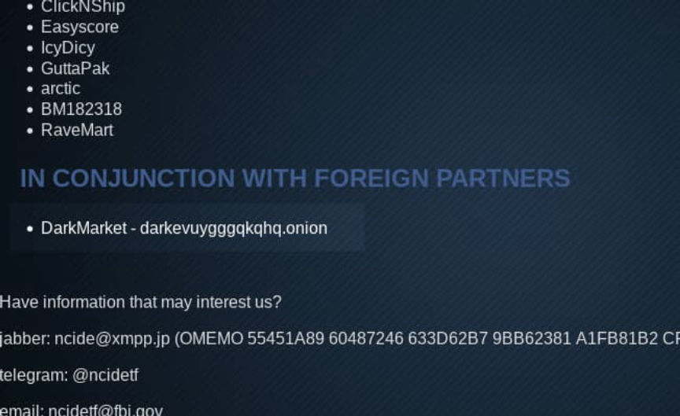
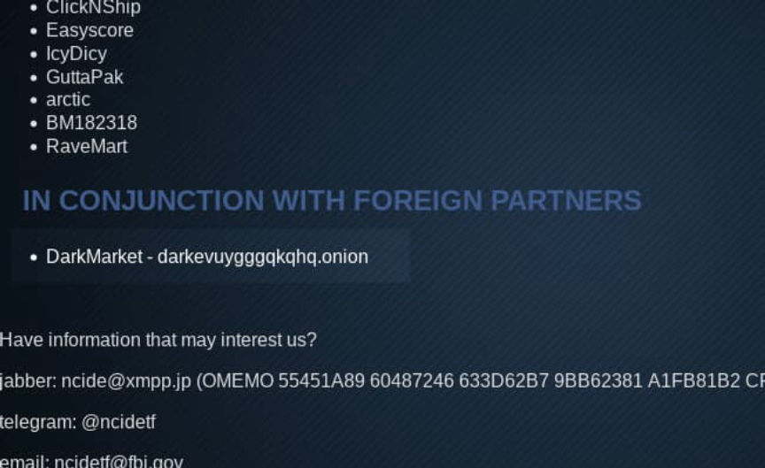

NCIDETF Apparently Assisted in the DarkMarket Investigation?
~2 min read | Published on 2021-12-20, tagged Darkweb-Market using 358 words.
The Northern California Illicit Digital Economy Taskforce added DarkMarket to their list of successful investigations.
The Northern California Illicit Digital Economy (NCIDE) Task Force, in their own words, “investigates violations of U.S. law involving cryptocurrencies and dark web marketplaces in the greater Northern California area and beyond.” A recent change to the site indicates that the Task Force played some role in the DarkMarket investigation and seizure.Background on the NCIDETF
An onion service operated by the Task Force displays the usernames of vendors investigated and identified by NCIDETF investigators. In many cases, the vendors listed on the onion service have also been convicted of crimes related to illicit drug distribution. Traditionally, the list has included arrested vendors and identified vendors. The Task Force changed how they listed the subjects of NCIDETF investigations by eliminating the identified vendors section and adding a section for cases worked with federal partners and a section for foreign partners.
<code>ncidetfs7banpz2d7vpndev5somwoki5vwdpfty2k7javniujekit6ad.onion</code>
The federal partners’ section includes some new names as well as some old names. Interestingly, there are now some vendors missing from the list such as MR_Taffy and HonestHerb. The list of identified vendors is still available in the source for the website; the Task Force commented out the list and replaced it with the section for foreign partners.The DarkMarket Addition
But the significant change seems to be the inclusion of DarkMarket as a case worked with foreign partners. I have no idea what role the Task Force played in the DarkMarket investigation. The NCIDETF originally appeared to primarily target marijuana vendors located in California. The CyberBunker servers undoubtedly provided law enforcement agencies with a ton of information on the marketplace’s administrators. But that is basically the extent of the information available to the public.

The DarkMarket trial started last week. Hopefully some technical details about law enforcement’s tactics and methods surface. A role in the takedown of DarkMarket seems significant enough for a press release.
Oh yeah, another update to the site includes new contact information for the Task Force. They are now on Telegram with the username @ncidetf and have the following jabber account: [email protected].
The Northern California Illicit Digital Economy (NCIDE) Task Force, in their own words, “investigates violations of U.S. law involving cryptocurrencies and dark web marketplaces in the greater Northern California area and beyond.” A recent change to the site indicates that the Task Force played some role in the DarkMarket investigation and seizure.Background on the NCIDETF
An onion service operated by the Task Force displays the usernames of vendors investigated and identified by NCIDETF investigators. In many cases, the vendors listed on the onion service have also been convicted of crimes related to illicit drug distribution. Traditionally, the list has included arrested vendors and identified vendors. The Task Force changed how they listed the subjects of NCIDETF investigations by eliminating the identified vendors section and adding a section for cases worked with federal partners and a section for foreign partners.
<code>ncidetfs7banpz2d7vpndev5somwoki5vwdpfty2k7javniujekit6ad.onion</code>
The federal partners’ section includes some new names as well as some old names. Interestingly, there are now some vendors missing from the list such as MR_Taffy and HonestHerb. The list of identified vendors is still available in the source for the website; the Task Force commented out the list and replaced it with the section for foreign partners.The DarkMarket Addition
But the significant change seems to be the inclusion of DarkMarket as a case worked with foreign partners. I have no idea what role the Task Force played in the DarkMarket investigation. The NCIDETF originally appeared to primarily target marijuana vendors located in California. The CyberBunker servers undoubtedly provided law enforcement agencies with a ton of information on the marketplace’s administrators. But that is basically the extent of the information available to the public.

I almost feel as if I am on the wrong NCIDETF website.
The DarkMarket trial started last week. Hopefully some technical details about law enforcement’s tactics and methods surface. A role in the takedown of DarkMarket seems significant enough for a press release.
Oh yeah, another update to the site includes new contact information for the Task Force. They are now on Telegram with the username @ncidetf and have the following jabber account: [email protected].